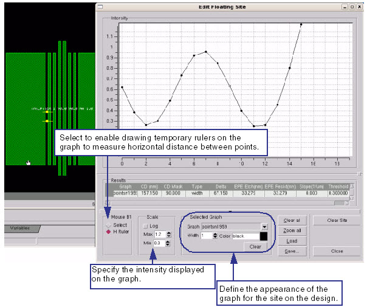
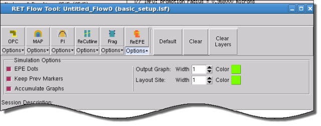

The EPE tool
measures edge placement errors by placing an OPCpro-style control
site placed on the edge of a polygon.
Restrictions and Limitations
This tool is only available in
Calibre OPCpro mode.
Procedure
- Perform the steps in “Configuring a Calibre OPCpro Session” to load the Calibre RET Flow
Tool with a working Calibre OPCpro setup file.
- In the Calibre WORKbench main
window, click EPE to
activate the tool, then click on an edge in the layout.
The nearest edge to your mouse
click displays the site used for that fragment, and the Edit Floating
Site window appears.
Figure 1. Edit Floating Site
Window (EPE Tool)
- (Optional) Adjust the settings
in the ReEPE Options pane in the RET Flow Tool.
Figure 2. ReEPE Options (RET
Flow Tool, Calibre OPCpro Session)